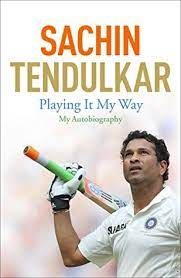
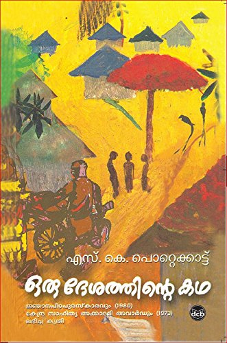

Best Seller's
IN TO THE WILD
Jon Krakauer
Into the Wild tells the true story of the journey of 24-year-old Christopher McCandless into Alaska's Denali
National Park and Preserve, where he starved to death in an abandoned bus after spending four months
foraging and hunting game.
Playing It My Way

Sachin Tendulkar
This is the autobiography of legend and the renowned personality in cricket, Sachin Tendulkar. Sachin
Tendulkar played for good 24 years and retired in 2013. In this book Sachin talks about his journey from his
first Test match at the age of 16 to his retirement
IKIGAI

Hector Garcia & Francesc Miralles
THE INTERNATIONAL BESTSELLER We all have an ikigai. It's the Japanese word for a reason to live or a
reason to jump out of bed in the morning. Its the place where your needs, desires, ambitions, and
satisfaction meet. A place of balance.
A Game Of Thrones

George R R Martin
A Game of Thrones is the first novel in A Song of Ice and Fire,a series of fantasy novels by American author
George R. R. Martin. It was first published on August 1, 1996.The novel won the 1997 Locus Award and was
nominated for both the 1997 Nebula Award and the 1997 World Fantasy Award.
RICH DAD POOR DAD

Robert T Kiyosaki
Rich Dad Poor Dad is a 1997 book written by Robert T.Kiyosaki and Sharon Lechter.It advocates the
importance of financial literacy,financial independence and building wealth through investing in assets,
real estate investing, starting and owning businesses, as well as increasing one's financial intelligence
The Immortals Of Meluha

Amish Tripathi
The Immortals of Meluha is the first book of Amish Tripathi, first book of Amishverse, and also the first
book of Shiva Trilogy. The story is set in the land of Meluha and starts with the arrival of the Shiva. The
Meluhans believe that Shiva is their fabled saviour Neelkanth.
THE 3 MISTAKES OF MY LIFE

Chetan Bhagat
The 3 Mistakes of My Life is the third novel written by Chetan Bhagat. The book was published in May 2008 and
had an initial print-run of 420,000. The novel follows the story of three friends and is based in the city
of Ahmedabad in western India. This is the third best seller novel by Chetan Bhagat
Oru Desathinte Katha

S K Pottekkatt
Oru Desathinte Katha is a Malayalam novel written by S. K. Pottekkatt in 1971. It sketches the men and women
of Athiranippadam, drawing the history of the country while detailing the micro-history of a place. It won
the Kendra Sahitya Academy Award in 1972, and the Jnanpith Award in 1980.